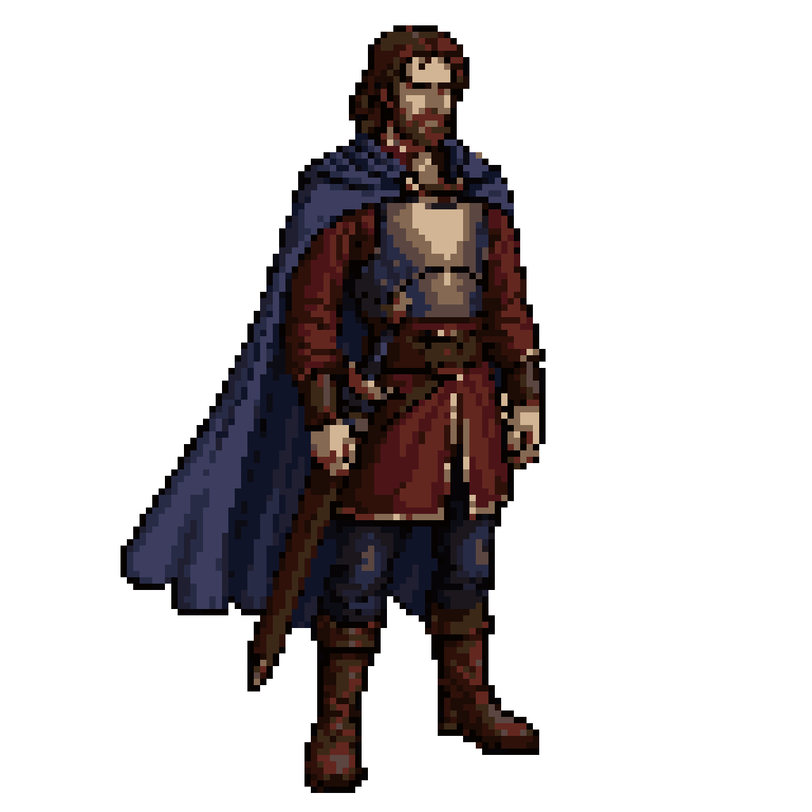
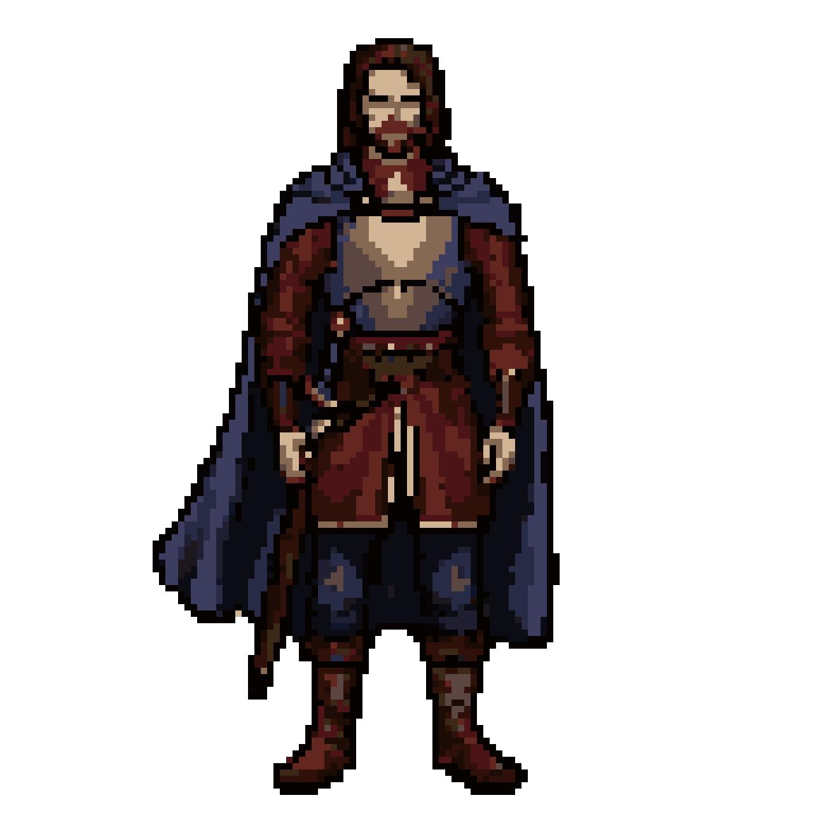
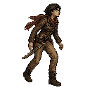
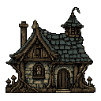
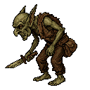

<!-- Original work Copyright 2026 Valentyn Karachevtsev (SpriteLoom)
     Licensed under the Apache License, Version 2.0
     Modifications Copyright 2026 Alessio Russo (Pixagon) -->
<meta charset="utf-8">
<!-- without this, phones render the page at desktop width and shrink it -->
<meta name="viewport" content="width=device-width, initial-scale=1">
<title>Pixagon, AI pixel art assistant for Aseprite</title>
<link rel="icon" href="img/pixagon.ico">
<link rel="preconnect" href="https://fonts.googleapis.com">
<link rel="preconnect" href="https://fonts.gstatic.com" crossorigin>
<link rel="stylesheet" href="https://fonts.googleapis.com/css2?family=Inter:wght@400;500;600;700&family=Pixelify+Sans:wght@500;700&display=swap">
<style>
  /* dragon palette, sampled from img/pixagon.png */
  :root {
    --bg: #0d0510;
    --bg-2: #1a0a14;
    --panel: #24101a;
    --line: #3b1e29;
    --ink: #f0dcd0;
    --ink-dim: #b99a94;
    --ink-faint: #8a6a6a;
    --gold: #db7334;
    --gold-deep: #d94624;
    --danger: #c8283a;
    --check-a: #1d0a16;
    --check-b: #14070f;
    --mono: ui-monospace, "Cascadia Code", "SFMono-Regular", Consolas, "Liberation Mono", monospace;
    --sans: "Inter", system-ui, -apple-system, "Segoe UI", Roboto, Helvetica, Arial, sans-serif;
    --pixel: "Pixelify Sans", ui-monospace, Consolas, monospace;
    --maxw: 1080px;
  }
  :root[data-theme="dark"] {
    --bg: #0d0510; --bg-2: #1a0a14; --panel: #24101a; --line: #3b1e29;
    --ink: #f0dcd0; --ink-dim: #b99a94; --ink-faint: #8a6a6a;
    --gold: #db7334; --gold-deep: #d94624; --danger: #c8283a;
    --check-a: #1d0a16; --check-b: #14070f;
  }
  :root[data-theme="light"] {
    --bg: #f3e6d8; --bg-2: #ead8c6; --panel: #f8eee3; --line: #d9bfa8;
    --ink: #2a0f14; --ink-dim: #6e4a45; --ink-faint: #92706a;
    --gold: #c1451f; --gold-deep: #9b192b; --danger: #9b192b;
    --check-a: #e6d3c0; --check-b: #efe0cf;
  }

  * { box-sizing: border-box; }
  html { scroll-behavior: smooth; }
  body {
    margin: 0;
    background: var(--bg);
    color: var(--ink);
    font-family: var(--sans);
    line-height: 1.6;
    -webkit-font-smoothing: antialiased;
  }
  img, iframe { max-width: 100%; }
  a { color: var(--gold); text-decoration: none; }
  a:hover { text-decoration: underline; }
  :focus-visible { outline: 2px solid var(--gold); outline-offset: 3px; border-radius: 2px; }

  .wrap { max-width: var(--maxw); margin: 0 auto; padding: 0 24px; }

  .eyebrow {
    font-family: var(--mono);
    font-size: 12px;
    letter-spacing: 0.18em;
    text-transform: uppercase;
    color: var(--gold);
  }

  /* ---- top bar ---- */
  header.bar {
    position: sticky; top: 0; z-index: 10;
    background: color-mix(in srgb, var(--bg) 88%, transparent);
    backdrop-filter: blur(8px);
    border-bottom: 1px solid var(--line);
  }
  .bar .wrap { display: flex; align-items: center; justify-content: space-between; min-height: 84px; }
  .brand { display: flex; align-items: center; gap: 14px; font-family: var(--mono); font-weight: 700; font-size: 30px; letter-spacing: 0.02em; }
  .brand .dot { width: 110px; height: 110px; flex: none; image-rendering: pixelated; background: url("img/pixagon.png") center/contain no-repeat; }
  .bar nav { display: flex; align-items: center; gap: 26px; font-size: 17px; }
  .bar nav a { color: var(--ink-dim); }
  .bar nav a:hover { color: var(--ink); text-decoration: none; }
  .ghbtn { color: var(--ink) !important; border: 1px solid var(--line); padding: 9px 16px; border-radius: 7px; font-family: var(--mono); font-size: 14px; margin-left: 12px; }
  .ghbtn:hover { border-color: var(--gold); text-decoration: none; }
  .dlbtn {
    color: #0b0211 !important; background: var(--gold); border: 1px solid var(--gold);
    padding: 9px 18px; border-radius: 7px; font-family: var(--mono); font-size: 14px; font-weight: 700;
  }
  .dlbtn:hover { background: var(--gold-deep); border-color: var(--gold-deep); text-decoration: none; }
  .navtoggle { display: none; }
  /* below 720px the links collapse into a dropdown opened by the hamburger */
  @media (max-width: 720px) {
    .navtoggle {
      display: grid; place-items: center; width: 44px; height: 44px; padding: 0; cursor: pointer;
      background: transparent; border: 1px solid var(--line); border-radius: 8px; color: var(--ink);
    }
    .navtoggle:hover { border-color: var(--gold); }
    /* three bars drawn with one span and its pseudo elements; they morph into an X when open */
    .navtoggle span, .navtoggle span::before, .navtoggle span::after {
      content: ""; display: block; width: 20px; height: 2px; background: currentColor;
      border-radius: 2px; transition: transform .18s ease, background .18s ease;
    }
    .navtoggle span { position: relative; }
    .navtoggle span::before { position: absolute; top: -6px; }
    .navtoggle span::after { position: absolute; top: 6px; }
    .bar.open .navtoggle span { background: transparent; }
    .bar.open .navtoggle span::before { transform: translateY(6px) rotate(45deg); }
    .bar.open .navtoggle span::after { transform: translateY(-6px) rotate(-45deg); }

    .bar nav {
      display: none; position: absolute; top: 100%; left: 0; right: 0;
      flex-direction: column; align-items: stretch; gap: 4px;
      padding: 12px 16px 18px; background: var(--bg); border-bottom: 1px solid var(--line);
    }
    .bar.open nav { display: flex; }
    .bar nav a { padding: 12px 8px; }
    .bar nav .ghbtn, .bar nav .dlbtn { margin: 6px 0 0; padding: 12px 16px; text-align: center; }
  }
  @media (prefers-reduced-motion: reduce) { .navtoggle span, .navtoggle span::before, .navtoggle span::after { transition: none; } }

  /* ---- hero ---- */
  .hero { padding: 80px 0 40px; }
  .hero h1 {
    font-size: clamp(40px, 7vw, 76px);
    line-height: 1.02;
    letter-spacing: 0.012em;
    margin: 18px 0 0;
    text-wrap: balance;
    font-weight: 800;
  }
  .hero h1 .fg { color: var(--gold); }
  .hero .lede {
    max-width: 60ch;
    font-size: clamp(17px, 2.2vw, 20px);
    color: var(--ink-dim);
    margin: 22px 0 0;
  }
  .hero .cta { display: flex; flex-wrap: wrap; gap: 14px; margin-top: 32px; }
  .btn {
    font-family: var(--mono); font-size: 15px; font-weight: 600;
    padding: 13px 22px; border-radius: 8px; border: 1px solid transparent;
    display: inline-flex; align-items: center; gap: 9px;
  }
  .btn.primary { background: var(--gold); color: #0b0211; }
  .btn.primary:hover { background: var(--gold-deep); text-decoration: none; }
  .btn.secondary { border-color: var(--line); color: var(--ink); }
  .btn.secondary:hover { border-color: var(--gold); text-decoration: none; }
  .badges { margin-top: 22px; display: flex; flex-wrap: wrap; gap: 8px 18px; font-family: var(--mono); font-size: 12.5px; color: var(--ink-faint); }
  .badges span::before { content: "> "; color: var(--gold); }

  /* ---- checkerboard gallery ---- */
  .stage {
    margin-top: 62px;
    border: 1px solid var(--line);
    border-radius: 14px;
    overflow: hidden;
    background: var(--panel);
  }
  .stage-head {
    display: flex; align-items: center; gap: 8px;
    padding: 12px 16px; border-bottom: 1px solid var(--line);
    font-family: var(--mono); font-size: 12px; color: var(--ink-faint);
  }
  .stage-head .tl { width: 11px; height: 11px; border-radius: 50%; background: var(--line); }
  .stage-head .tl:nth-child(1){ background:#e8705a; } .stage-head .tl:nth-child(2){ background:#e6b34a; } .stage-head .tl:nth-child(3){ background:#6bbf7a; }
  .stage-head .title { margin-left: 8px; }
  .grid {
    display: grid;
    grid-template-columns: repeat(3, 1fr);
    background-image:
      linear-gradient(45deg, var(--check-a) 25%, transparent 25%, transparent 75%, var(--check-a) 75%),
      linear-gradient(45deg, var(--check-a) 25%, var(--check-b) 25%, var(--check-b) 75%, var(--check-a) 75%);
    background-size: 16px 16px;
    background-position: 0 0, 8px 8px;
    background-color: var(--check-b);
  }
  @media (max-width: 820px) { .grid { grid-template-columns: repeat(3, 1fr); } }
  @media (max-width: 420px) { .grid { grid-template-columns: repeat(2, 1fr); } }
  .cell {
    display: flex; flex-direction: column;
    align-items: center; justify-content: center; gap: 10px;
    padding: 12px; position: relative; min-width: 0;
    border-right: 1px solid color-mix(in srgb, var(--line) 55%, transparent);
    border-bottom: 1px solid color-mix(in srgb, var(--line) 55%, transparent);
  }
  .cell img {
    image-rendering: pixelated;
    width: 250px; height: 250px; max-width: 100%; object-fit: contain;
    transition: transform .18s ease;
  }
  .cell:hover img { transform: translateY(-4px) scale(1.06); }
  .cell .tag {
    font-family: var(--mono); font-size: 12px; line-height: 1.45;
    color: var(--ink-dim); text-align: center; max-width: 100%;
  }
  .cell .tag summary { cursor: pointer; color: var(--gold); font-size: 12px; list-style: none; }
  .cell .tag summary::-webkit-details-marker { display: none; }
  .cell .tag summary::marker { content: ""; }
  .cell .tag p {
    position: absolute; left: 10px; right: 10px; bottom: 44px; margin: 0; z-index: 5;
    text-align: left; background: var(--panel); border: 1px solid var(--line);
    border-radius: 8px; padding: 10px 12px; box-shadow: 0 10px 26px rgba(0,0,0,.45);
  }
  .cell .tag .seed { display: block; margin-top: 6px; color: var(--ink-faint); font-size: 11px; }
  @media (prefers-reduced-motion: reduce) {
    .cell img { transition: none; } .cell:hover img { transform: none; } .cell .tag { transition: none; }
  }

  /* ---- sections ---- */
  section { padding: 72px 0; border-top: 1px solid var(--line); }
  .section-title { font-size: clamp(26px, 4vw, 36px); letter-spacing: -0.01em; margin: 10px 0 0; font-weight: 800; text-wrap: balance; }
  .section-sub { color: var(--ink-dim); max-width: 62ch; margin: 14px 0 0; }

  .tasks { display: grid; grid-template-columns: repeat(2, 1fr); gap: 16px; margin-top: 40px; }
  @media (max-width: 720px){ .tasks { grid-template-columns: 1fr; } }
  .task {
    background: var(--bg-2); border: 1px solid var(--line); border-radius: 12px;
    padding: 24px;
  }
  .task h3 { margin: 0; font-family: var(--mono); font-size: 16px; color: var(--gold); }
  .task p { margin: 10px 0 0; color: var(--ink-dim); font-size: 15px; }
  .task .ex { margin-top: 14px; font-family: var(--mono); font-size: 12.5px; color: var(--ink-faint); border-left: 2px solid var(--line); padding-left: 12px; }

  /* ---- task demo clips ---- */
  /* column ratio keeps the tall clip level with the two stacked ones, as in the README */
  .demos { margin-top: 40px; display: grid; grid-template-columns: 2.068fr 1fr; gap: 12px; }
  .demos .tall { grid-row: span 2; }
  .demos img {
    display: block; width: 100%; border: 1px solid var(--line); border-radius: 8px;
  }
  .demo-pair { margin-top: 12px; display: grid; grid-template-columns: 1fr 1fr; gap: 12px; }
  .demo-cap {
    margin: 14px 0 0; text-align: center;
    font-family: var(--mono); font-size: 13px; color: var(--ink-faint);
  }
  @media (max-width: 760px) {
    .demos, .demo-pair { grid-template-columns: 1fr; }
    .demos .tall { grid-row: auto; }
  }

  /* ---- prompt recipe ---- */
  .recipe { margin-top: 34px; display: flex; flex-wrap: wrap; align-items: center; gap: 10px; }
  .recipe .chip { font-family: var(--mono); font-size: 13px; padding: 8px 14px; border-radius: 8px; background: var(--bg-2); border: 1px solid var(--line); color: var(--ink); }
  .recipe .plus { color: var(--gold); font-family: var(--mono); font-weight: 700; }

  /* ---- how it works pipeline ---- */
  .pipe {
    margin-top: 40px; display: grid; grid-template-columns: 1fr auto 1fr auto 1fr; align-items: stretch; gap: 14px;
  }
  @media (max-width: 760px){ .pipe { grid-template-columns: 1fr; } .pipe .arrow { display: none; } }
  .node {
    background: var(--bg-2); border: 1px solid var(--line); border-radius: 12px; padding: 20px;
  }
  .node .k { font-family: var(--mono); font-size: 12px; letter-spacing: .08em; text-transform: uppercase; color: var(--gold); }
  .node .v { margin-top: 8px; font-weight: 700; }
  .node .d { margin-top: 6px; font-size: 13.5px; color: var(--ink-dim); }
  .arrow { display: flex; align-items: center; justify-content: center; color: var(--ink-faint); font-family: var(--mono); }

  /* ---- requirements spec sheet ---- */
  .spec { margin-top: 36px; border: 1px solid var(--line); border-radius: 12px; overflow: hidden; background: var(--bg-2); }
  .spec .row { display: grid; grid-template-columns: 200px 1fr; gap: 0; border-top: 1px solid var(--line); }
  .spec .row:first-child { border-top: 0; }
  .spec .k { padding: 15px 20px; font-family: var(--mono); font-size: 13px; letter-spacing: .06em; text-transform: uppercase; color: var(--ink-faint); background: color-mix(in srgb, var(--bg) 40%, transparent); }
  .spec .v { padding: 15px 20px; font-size: 15px; }
  @media (max-width: 560px){ .spec .row { grid-template-columns: 1fr; } .spec .v { padding-top: 0; } }
  .spec .v strong { color: var(--gold); }
  .warn {
    margin-top: 22px; border-left: 3px solid var(--danger);
    background: color-mix(in srgb, var(--danger) 10%, transparent);
    padding: 14px 18px; border-radius: 0 8px 8px 0; font-size: 15px; color: var(--ink);
  }

  /* ---- install steps ---- */
  .steps { margin-top: 36px; display: grid; gap: 14px; counter-reset: s; }
  .step { display: grid; grid-template-columns: 40px 1fr; gap: 16px; align-items: start; }
  .step .n {
    counter-increment: s; width: 36px; height: 36px; border-radius: 8px;
    display: grid; place-items: center; font-family: var(--mono); font-weight: 700;
    background: var(--bg-2); border: 1px solid var(--line); color: var(--gold);
  }
  .step .n::before { content: counter(s); }
  .step code, code.inline {
    font-family: var(--mono); font-size: 13.5px;
    background: var(--bg-2); border: 1px solid var(--line);
    padding: 2px 7px; border-radius: 5px; color: var(--ink);
  }
  .step .body { padding-top: 6px; }
  .step .body p { margin: 0; color: var(--ink-dim); }

  /* ---- final cta ---- */
  .final { text-align: center; }
  .final h2 { font-size: clamp(28px, 5vw, 44px); font-weight: 800; letter-spacing: -0.01em; margin: 0; }
  .final p { color: var(--ink-dim); margin: 16px auto 0; max-width: 52ch; }
  .final .cta { display: flex; flex-wrap: wrap; gap: 14px; justify-content: center; margin-top: 32px; }

  footer { border-top: 1px solid var(--line); padding: 34px 0 60px; color: var(--ink-faint); font-size: 13.5px; }
  footer .wrap { display: flex; flex-wrap: wrap; justify-content: space-between; gap: 12px; align-items: center; }
  footer .mono { font-family: var(--mono); }

  /* ---- pixel type: logo and headings only; Inter keeps buttons and labels readable ---- */
  .brand, .hero h1, .section-title, .final h2, .task h3 {
    font-family: var(--pixel); font-weight: 700;
  }
  .btn, .ghbtn, .dlbtn, .eyebrow { font-family: var(--sans); font-weight: 700; }
  .hero h1 { font-size: clamp(34px, 6vw, 64px); line-height: 1.1; letter-spacing: 0; }
  .section-title { font-size: clamp(26px, 4vw, 38px); line-height: 1.2; letter-spacing: 0; }
  .final h2 { font-size: clamp(28px, 4.5vw, 42px); line-height: 1.15; letter-spacing: 0; }
  .task h3 { font-size: 21px; }
  .eyebrow { font-size: 13px; letter-spacing: 0.14em; }

  /* ---- small screens: shrink the header and tighten spacing so nothing overflows ---- */
  @media (max-width: 640px) {
    .wrap { padding: 0 16px; }
    .bar .wrap { min-height: 64px; }
    .brand { font-size: 22px; gap: 8px; }
    .brand .dot { width: 56px; height: 56px; }
    .hero { padding: 48px 0 24px; }
    .stage { margin-top: 40px; }
    section { padding: 48px 0; }
    .task { padding: 18px; }
    .hero .cta .btn, .final .cta .btn { flex: 1 1 100%; justify-content: center; }
    .cell .tag p { position: static; margin-top: 8px; box-shadow: none; }
    pre, code { overflow-wrap: anywhere; }
  }
</style>

<header class="bar">
  <div class="wrap">
    <div class="brand"><span class="dot"></span> Pixagon</div>
    <button class="navtoggle" type="button" aria-label="Toggle menu" aria-expanded="false" aria-controls="nav"><span></span></button>
    <nav id="nav">
      <a class="navlink" href="#tasks">Features</a>
      <a class="navlink" href="#how">Architecture</a>
      <a class="ghbtn" href="https://github.com/blkdmr/pixagon">GitHub</a>
      <a class="dlbtn" href="https://blkdmr.itch.io/pixagon">Download</a>
    </nav>
  </div>
</header>

<main>
  <section class="hero" style="border-top:0;">
    <div class="wrap">
      <div class="eyebrow">An AI pixel-art assistant for Aseprite</div>
      <h1>Pixel art sprites, generated <span class="fg">inside Aseprite.</span></h1>
      <p class="lede">
        Pixagon runs a diffusion model on your own GPU, or any image model
        through OpenRouter, and wires it straight into Aseprite. Type a prompt,
        get a sprite; describe an edit, get a variant dropped in as a new
        layer; redraw only a selected region. Local mode never leaves your
        machine, and your existing pixels are never touched.
      </p>
      <div class="cta">
        <a class="btn primary" href="https://blkdmr.itch.io/pixagon">Download</a>
        <a class="btn secondary" href="#how">See how it works</a>
      </div>
      <div class="badges">
        <!--<span>Local FLUX.2 Klein or OpenRouter</span>-->
        <!--<span>Windows, macOS and Linux</span>-->
        <!--<span>One resident model, no swaps</span>-->
        <!--<span>Apache 2.0 licensed</span>-->
      </div>


      <div class="stage">
        <div class="stage-head">
          <span class="tl"></span><span class="tl"></span><span class="tl"></span>
          <span class="title">made with Pixagon, hover any sprite for its prompt</span>
        </div>
        <div class="grid">
          <div class="cell"><details class="tag"><summary>see prompt</summary><p>A tall man in fantasy costume</p></details></div>
          <div class="cell"><details class="tag"><summary>see prompt</summary><p>Show the same character from the front, seen head-on (edit of a prior character)</p></details></div>
          <div class="cell"><details class="tag"><summary>see prompt</summary><p>Pixel art sprite, full-body side view of a lean female explorer with short dark hair, leather jacket, worn trousers, boots, red scarf, belt pouches, and a sheathed curved sword. Alert, forward-leaning stance, muted earthy colors, dark outlines, and a clean silhouette.</p></details></div>
          <div class="cell"><details class="tag"><summary>see prompt</summary><p>A fantasy cottage, seen exactly from the side at eye level, in strict profile view: only its side silhouette is visible, the front face cannot be seen at all. A flat 2D side-scroller game object. The camera does not look down at it.</p></details></div>
          <div class="cell"><details class="tag"><summary>see prompt</summary><p>Pixel art sprite, full-body side view of a small, wiry goblin with green skin, pointed ears, a hooked nose, ragged leather armor, worn trousers, bare feet, a belt with pouches, and a rusty dagger. Hunched, sneaky stance, muted earthy colors, dark outlines, and a clean silhouette.</p></details></div>
          <div class="cell"><details class="tag"><summary>see prompt</summary><p>A single gold coin with an embossed crown, shiny in classic three-quarter view game perspective, seen from slightly above.</p></details></div>
        </div>
      </div>
      <p style="margin-top:14px; font-size:13px; color:var(--ink-faint); font-family:var(--mono);">
        Real output from the tool, one generation each. Shown scaled up with hard pixel edges to keep them crisp.
      </p>
    </div>
  </section>

  <section id="tasks">
    <div class="wrap">
      <div class="eyebrow">Four tasks, one panel</div>
      <h2 class="section-title">You stay in the editor the whole time</h2>
      <p class="section-sub">
        Every task opens results in a side window; click a variant to insert it
        as a new layer. It never modifies the pixels you already drew.
      </p>
      <div class="tasks">
        <div class="task">
          <h3>Generate</h3>
          <p>A sprite from a text prompt. Pick a view preset, name the subject, add extra detail, and the panel shows the exact text it will send.</p>
          <div class="ex">"closed book with dark brown leather cover"</div>
        </div>
        <div class="task">
          <h3>Edit with AI</h3>
          <p>Change an existing sprite by instruction, not a strength slider. Style and everything you didn't mention stays put.</p>
          <div class="ex">"make the sword glow slightly blue"</div>
        </div>
        <div class="task">
          <h3>Inpaint Selection</h3>
          <p>Same as Edit, but only ever touches the region you selected. The rest of the sprite is guaranteed untouched.</p>
          <div class="ex">"replace the wheels with skis"</div>
        </div>
        <div class="task">
          <h3>Rotate and Instruct</h3>
          <p>See the same subject from another angle. Name the subject explicitly and enable mirror symmetry for clean front and back views.</p>
          <div class="ex">"show the same character from behind"</div>
        </div>
      </div>

      <!--<div class="demos">
        
        
        
      </div>
      <p class="demo-cap">Generate &middot; Edit with AI &middot; Inpaint</p>

      <div class="demo-pair">
        
        
      </div>
      <p class="demo-cap">Rotate / Instruct, two different turnarounds. All clips sped up.</p>-->
    </div>
  </section>

  <section id="prompts">
    <div class="wrap">
      <div class="eyebrow">Prompting</div>
      <h2 class="section-title">A good sprite starts with a concrete subject</h2>
      <p class="section-sub">
        You don't write a paragraph. You name the <strong>subject</strong> the
        way you'd describe it to another artist, pick a <strong>view</strong>,
        and drop refinements in the <strong>extra</strong> field. The panel wraps
        that into the exact camera and framing text the model reads. "a bear"
        works; "a bear" with detail works far better.
      </p>

      <div class="recipe">
        <span class="chip">subject</span>
        <span class="plus">+</span>
        <span class="chip">material &amp; colour</span>
        <span class="plus">+</span>
        <span class="chip">one defining detail</span>
      </div>

      <div class="tasks">
        <div class="task">
          <h3>3/4 view</h3>
          <p>Props and objects. Read as a game asset from slightly above.</p>
          <div class="ex">"a wooden treasure chest with iron bands and a brass lock, lid closed"</div>
        </div>
        <div class="task">
          <h3>Side view</h3>
          <p>Creatures and characters for a side scroller. Name the silhouette.</p>
          <div class="ex">"a four legged brown horse with a black mane, standing"</div>
        </div>
        <div class="task">
          <h3>Front view</h3>
          <p>Buildings, gates, symmetrical structures seen head on.</p>
          <div class="ex">"a grey stone castle gate with two towers and a raised portcullis"</div>
        </div>
        <div class="task">
          <h3>Top down</h3>
          <p>Tiles and furniture for an overhead map.</p>
          <div class="ex">"a round wooden table with a red cloth, a lit candle, and two plates"</div>
        </div>
      </div>

      <div class="spec" style="margin-top:24px;">
        <div class="row"><div class="k" style="color:var(--danger);">Too vague</div><div class="v">"a monster" - "a character" - "a building"</div></div>
        <div class="row"><div class="k" style="color:var(--gold);">Concrete</div><div class="v">"a horned red demon with leathery bat wings, standing on two legs"</div></div>
      </div>

      <p class="section-sub" style="margin-top:22px;">
        Two more levers: put palette and mood in <strong>extra</strong> ("muted
        earth tones", "limited eight colour palette"), and for Rotate keep the
        same subject wording so the character stays itself across angles.
      </p>
    </div>
  </section>

  <section id="how">
    <div class="wrap">
      <div class="eyebrow">Architecture</div>
      <h2 class="section-title">How it works</h2>
      <p class="section-sub">
        A Lua extension in Aseprite talks over WebSocket to a local Python
        server. The server either keeps one model warm on your GPU or forwards
        requests to OpenRouter; both backends expose the same interface, so
        every task works the same way. The extension also runs setup, starts
        and stops the server through a small headless helper, and stores your
        settings, so there is no separate app. On the local backend
        there are no model swaps after the first warm up, so tasks on 12+ GB
        cards respond in seconds. 8&nbsp;GB cards use offload mode and take
        longer per task.
      </p>
      <div class="pipe">
        <div class="node">
          <div class="k">Aseprite - Lua</div>
          <div class="v">The plugin</div>
          <div class="d">Control panel, Setup dialog, results & history windows, mask export, layer insertion.</div>
        </div>
        <div class="arrow">&gt;</div>
        <div class="node">
          <div class="k">Python - WebSocket</div>
          <div class="v">The server</div>
          <div class="d">Validates the request at the boundary, streams progress, postprocesses raw output into a clean sprite.</div>
        </div>
        <div class="arrow">&gt;</div>
        <div class="node">
          <div class="k">FLUX.2 Klein - OpenRouter</div>
          <div class="v">The model</div>
          <div class="d">Local: one 4B parameter pipeline, warmed up once. First load downloads ~15&nbsp;GB; on 12+ GB cards it stays fully resident, in offload mode it streams layer-by-layer per task. Cloud: any OpenRouter model with image output.</div>
        </div>
      </div>
    </div>
  </section>

  <section id="req">
    <div class="wrap">
      <div class="eyebrow">Before you download</div>
      <h2 class="section-title">This runs a real model on your hardware</h2>
      <p class="section-sub">
        Pick a provider. <strong>Local</strong> runs FLUX.2 Klein on your own
        GPU: private, no subscription, needs a capable NVIDIA card or an
        Apple Silicon Mac. <strong>OpenRouter</strong> runs in the cloud and
        needs no GPU, only an API key. There is no CPU fallback for the local
        model. Check the spec before you install.
      </p>
      <div class="spec">
        <div class="row"><div class="k">GPU (local)</div><div class="v"><strong>NVIDIA, 12+ GB VRAM</strong>, or an <strong>Apple Silicon Mac</strong> (M1 or newer, macOS 14+) - developed on an RTX 5080; 8&nbsp;GB cards work in offload mode</div></div>
        <div class="row"><div class="k">RAM (local)</div><div class="v">16 GB minimum - 24 GB or more of unified memory recommended on a Mac</div></div>
        <div class="row"><div class="k">Cloud</div><div class="v">An <strong>OpenRouter</strong> API key and a model with image output. No GPU needed, no 15&nbsp;GB download.</div></div>
        <div class="row"><div class="k">OS</div><div class="v">Windows, macOS, Linux (NVIDIA driver with CUDA 12.8 for local)</div></div>
        <div class="row"><div class="k">Python</div><div class="v">Not needed up front: Setup installs uv, which fetches Python 3.12</div></div>
        <div class="row"><div class="k">Aseprite</div><div class="v">1.3 or newer</div></div>
        <div class="row"><div class="k">Disk</div><div class="v">~15 GB for the local model, downloaded by Setup</div></div>
      </div>
      <div class="warn">
        Cloud mode sends your prompts and the sprites you edit to OpenRouter
        and the model's provider. Use local mode if that matters. Image-only
        readers such as Gemma cannot generate sprites; pick a model that
        outputs images.
      </div>
      <p class="section-sub" style="margin-top:20px">
        <strong>VRAM modes</strong>: <code class="inline">auto</code> detects
        your card, <code class="inline">bf16</code> keeps the model resident
        (12&nbsp;GB and up), <code class="inline">offload</code> is for 8&nbsp;GB
        cards (e.g. a laptop RTX 4060). The ~8&nbsp;GB transformer doesn't fit
        on the GPU whole, so offload swaps one layer onto the GPU at a time.
        Same output, just much slower per image; the constant PCIe transfer,
        not compute, is what makes it slow.
      </p>
    </div>
  </section>

  <section>
    <div class="wrap">
      <div class="eyebrow">Setup</div>
      <h2 class="section-title">One file, four steps</h2>
      <div class="steps">
        <div class="step"><div class="n"></div><div class="body"><p>Download the <code class="inline">.aseprite-extension</code> file and double-click it, or use <strong>Edit &gt; Preferences &gt; Extensions &gt; Add Extension</strong> in Aseprite.</p></div></div>
        <div class="step"><div class="n"></div><div class="body"><p>Open the Pixagon panel. Setup opens by itself if something is missing, or use the <strong>Pixagon Setup...</strong> command or the <strong>Setup...</strong> button.</p></div></div>
        <div class="step"><div class="n"></div><div class="body"><p>Pick a provider: <strong>Local GPU</strong>, or <strong>OpenRouter</strong> with your API key and <strong>Save OpenRouter settings</strong>. Press <strong>Install</strong>. It sets up uv and Python, plus the 15&nbsp;GB model for local only.</p></div></div>
        <div class="step"><div class="n"></div><div class="body"><p>The panel starts the server for you once everything is installed. Type a prompt and generate.</p></div></div>
      </div>
    </div>
  </section>

  <section class="final">
    <div class="wrap">
      <h2>Weave your first sprite.</h2>
      <p>Free, open source, and yours to run locally or in the cloud. Grab the extension on itch.io, free or pay what you want, or build it yourself from the repository.</p>
      <div class="cta">
        <a class="btn primary" href="https://blkdmr.itch.io/pixagon">Download on itch.io</a>
        <a class="btn secondary" href="https://github.com/blkdmr/pixagon">Open the repository</a>
      </div>
    </div>
  </section>
</main>

<footer>
  <div class="wrap">
    <span class="mono">Pixagon - AI pixel art assistant for Aseprite</span>
    <span class="mono">Apache 2.0 - built on FLUX.2 Klein - fork of SpriteLoom</span>
  </div>
</footer>

<script>
  (function () {
    var root = document.documentElement;
    try {
      var t = localStorage.getItem("sf-theme");
      if (t) root.setAttribute("data-theme", t);
    } catch (e) {}
  })();

  // collapsible navbar: the hamburger toggles it; a link tap or Escape closes it
  (function () {
    var bar = document.querySelector("header.bar");
    var btn = bar.querySelector(".navtoggle");
    function set(open) {
      bar.classList.toggle("open", open);
      btn.setAttribute("aria-expanded", open ? "true" : "false");
    }
    btn.addEventListener("click", function () { set(!bar.classList.contains("open")); });
    bar.querySelectorAll("nav a").forEach(function (a) {
      a.addEventListener("click", function () { set(false); });
    });
    document.addEventListener("keydown", function (e) { if (e.key === "Escape") set(false); });
  })();

</script>
